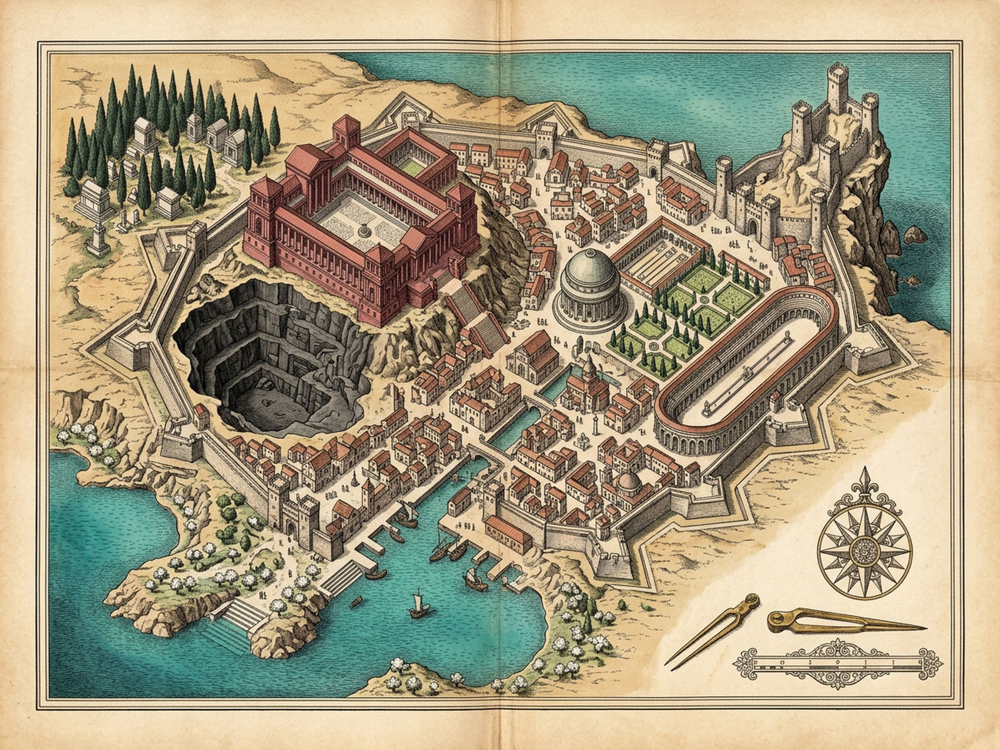
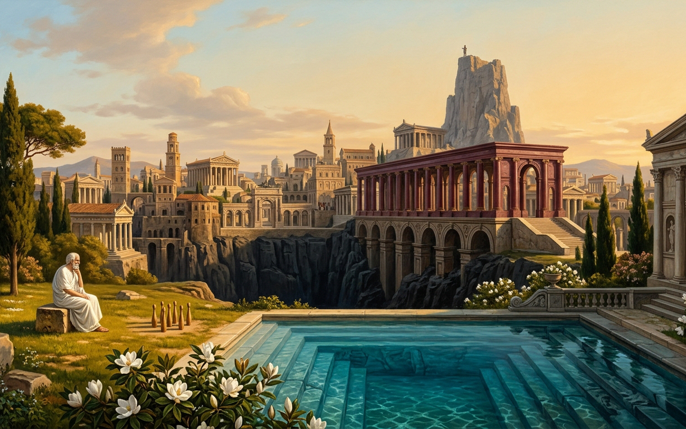

HYPATIA · LEXICON OF THINGS
Old Lexicon Faith: 100% · Rewired Things: 0 / 6
[P] Plates
[M] Sound On
[R] Reset
1 · Lagoon
2 · Palace
3 · Library
4 · Stables
5 · Tombs
6 · Pinnacle
I · Magnolia Garden & Blue Lagoons — White magnolia blossoms reflected in turquoise lagoons. Expected: Young and beautiful ladies bathing among mirrored hedges.
Prism Refraction
0.00
[←]
[U] Unseal Thing
[A] Unseal All 6
[→]
THING-LEXICON LEDGER · 0 / 6 REWIRED
I · Magnolia Lagoons → Expected: Bathing ladies among hedges
II · Porphyry Palace → Expected: Imperial audience with the Sultan
III · Vellum Library → Expected: Philosopher studying ancient scrolls
IV · Sultan's Stables → Expected: Royal grooms & Arabian mounts
V · Cemetery Tombs → Expected: Mourning dust & funereal silence
VI · Citadel Pinnacle → Expected: Dry inland watchtower far from sea
Citadel Crag Vigil · Sea Exists: FALSE · Unseal the things of the city or ascend the dry pinnacle to await passage.
[V] Ascend Pinnacle · Await Sky-Ship

Plate I · Cartographic Survey of Hypatia — Six Loci from Turquoise Lagoons to the Dry Inland Citadel Crags

Plate II · Architectural Elevation of Hypatia — Surface Signifiers Refracted into Subterranean & Celestial Realities